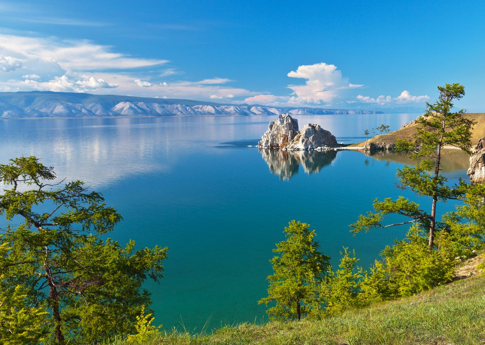

Цифры и факты
-

Размеры
Площадь водной поверхности Байкала — 31 722 км², что примерно равно площади Бельгии или Нидерландов.
-
Глубина
Байкал — самое глубокое озеро на Земле. Современное значение максимальной глубины озера — 1642 м.
-
Лед
К концу зимы толщина льда на Байкале достигает 1 м, а в заливах — 1,5-2 м.
Растительный и животный мир Байкала
- В озере водится более 2,5 тысяч видов и подвидов животных, а две трети из них эндемичны и встречаются только здесь. Во всем мире известны рыба-омуль и пресноводный тюлень – нерпа, тайну появления которого в озере пока не удалось разгадать. Этих эндемиков можно увидеть своими глазами во время отдыха на Байкале – как в музее или нерпинарии, так и в естественной среде обитания. В озере насчитывается 58 видов рыб. Наиболее известные - омуль, сиг, хариус, таймень, осетр, голомянка, ленок.